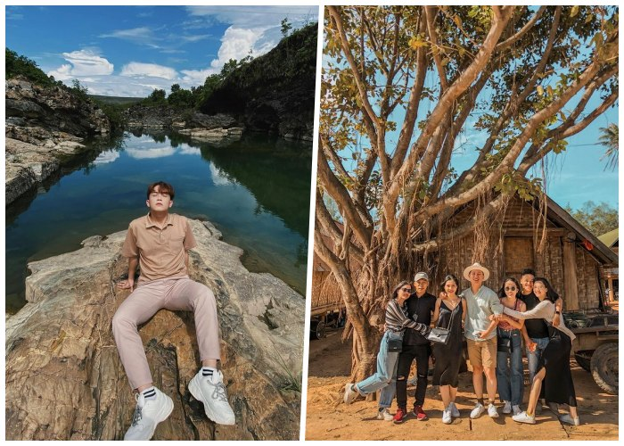

Các dân tộc sinh sống
Đắk Lắk là nơi chung sống của hơn 40 dân tộc anh em. Mỗi dân tộc mang một nét văn hóa riêng nhưng đều đoàn kết và gắn bó. Sự đa dạng này tạo nên bản sắc phong phú cho vùng đất Tây Nguyên.

Đời sống sinh hoạt
Người dân Đắk Lắk có lối sống giản dị, gần gũi với thiên nhiên. Họ gắn bó với sản xuất nông nghiệp và duy trì nhiều phong tục truyền thống trong sinh hoạt hằng ngày.
Tính cách con người
Con người Đắk Lắk nổi tiếng hiền hòa, chân thành và hiếu khách. Du khách đến đây luôn cảm nhận được sự ấm áp và thân thiện trong từng cử chỉ, lời nói.